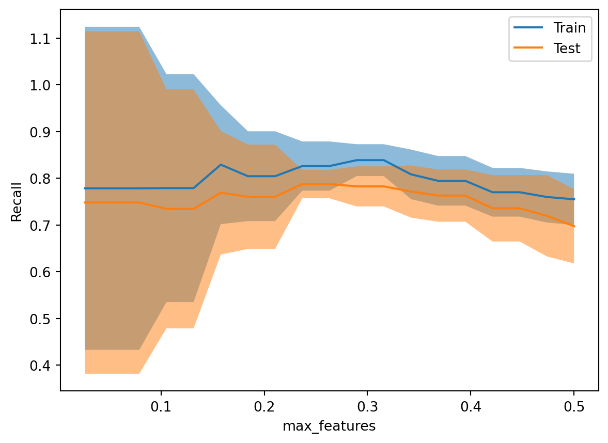
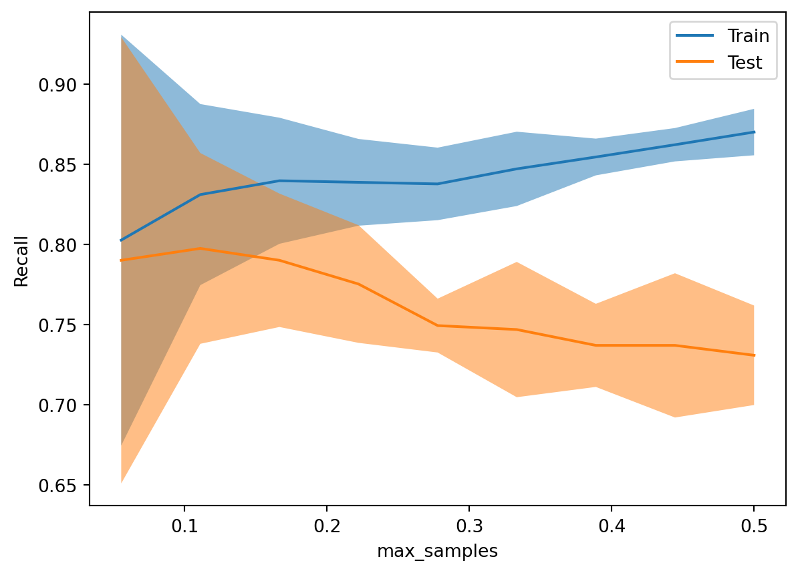
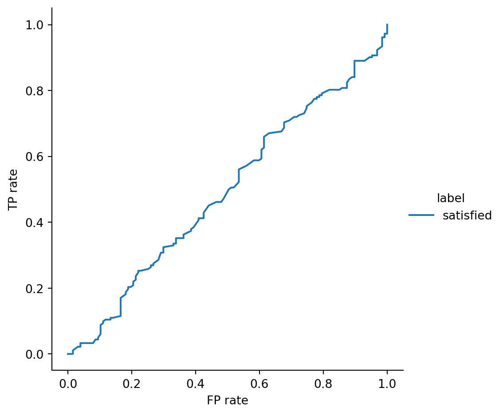
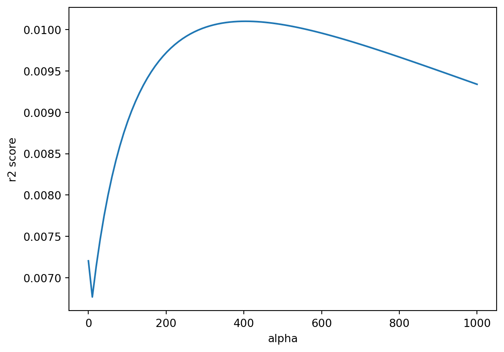
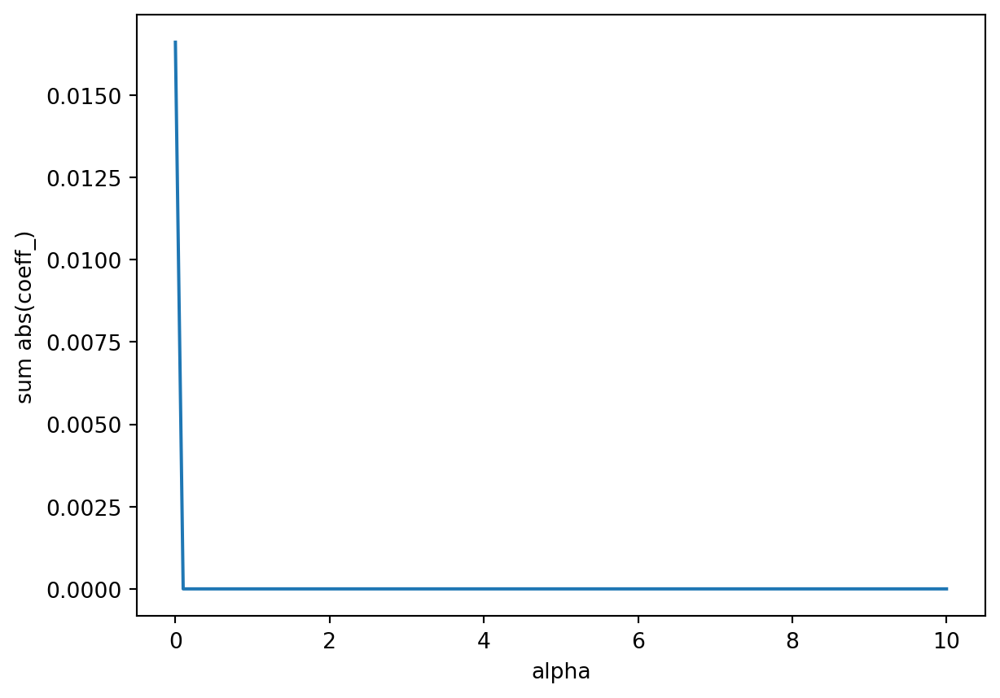
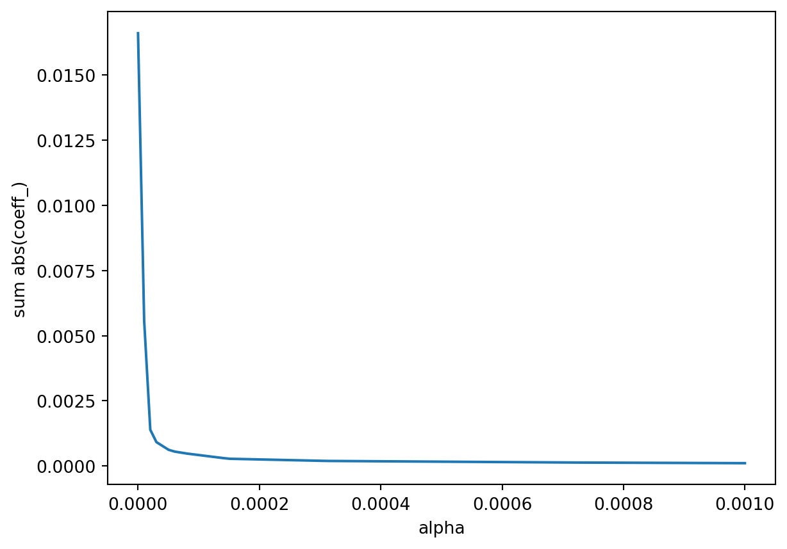

import pandas as pd
import seaborn as sns
import numpy as np
import matplotlib.pyplot as plt
# suppress warnings
import warnings
warnings.filterwarnings('ignore')
bails = pd.read_csv('bail_data_daily_citywide.txt')
weather = pd.read_csv('daily_weather_data.csv')How does Philadelphia weather affect bails?
Using data from the city of Philadelphia about bails and weather to invesigate their relationship with common classification and regression algorithms.
classification
regression
math219
python
Introduction
Data sourced from the city of Philadelphia. This is a data set that includes information about what bails were set and for what crime over the entire city of Philadelphia from 2014 to 2022. Data about daily weather in Philadelphia (specifically measured at the Philadelphia Airport) sourced from National Centers for Environmental Information. The formal documentation lists out what each column in the weather dataset means, so I’ll leave the column names as they are to not stray from the documentation.
I’ll merge the sets in the same manner as project 1, and fill NaN values with 0 as none of the values important to this analysis will be affected by filling NaN with 0.
totals = bails[bails['bail_category'] == 'Total']
bails = bails[bails['bail_category'] != 'Total']
#saving the list of columns for later !!
bail_columns = bails.columns[2:]
bails = bails.merge(weather, left_on='date_value', right_on='DATE', how='left')
#getting rid of some useless columns
bails.drop(columns=['DATE', 'STATION', 'NAME'], inplace=True)
bails = bails.fillna(0)
print(bails.columns)Index(['date_value', 'bail_category', 'Aggravated Assault',
'Altered Firearm Serial Number', 'Arson', 'Attempted Murder',
'Auto Theft', 'Burglary/Commercial', 'Burglary/Residential',
'Carjacking', 'Criminal Mischief', 'Disorderly Conduct',
'Drug Possession', 'Drug Possession in Jails', 'Drug Sales',
'Drug Sales with a Firearm', 'DUI', 'Ethnic Intimidation',
'Firearm Possession by a Prohibited Person',
'Firearm Possession without a License', 'Fraud', 'Homicide: Other',
'Homicide: Shooting', 'Illegal Dumping/Littering', 'Non-Fatal Shooting',
'Other Assaults', 'Other Firearm Offenses', 'Other Property Crimes',
'Other Violent Crimes', 'Patronizing Prostitutes/Sex Workers',
'Promoting Prostitution', 'Prostitution/Sex Work', 'Rape',
'Retail Theft', 'Robbery', 'Robbery with a Deadly Weapon',
'Sexual Assault and Other Sex Offenses', 'Simple Assault',
'Strangulation', 'Theft', 'Theft from Auto', 'Threats of Violence',
'Trespass', 'Uncategorized Offenses',
'Victim/Witness Intimidation & Retaliation',
'Violation of Protection Order', 'AWND', 'PGTM', 'PRCP', 'PSUN', 'SNOW',
'SNWD', 'TAVG', 'TMAX', 'TMIN', 'TSUN', 'WDF2', 'WDF5', 'WSF2', 'WSF5',
'WT01', 'WT02', 'WT03', 'WT04', 'WT05', 'WT06', 'WT08', 'WT09'],
dtype='object')I’ll also quick just describe the weather columns to get an idea of what they’re looking like
bails[['AWND', 'PGTM', 'PRCP', 'PSUN', 'SNOW',
'SNWD', 'TAVG', 'TMAX', 'TMIN', 'TSUN', 'WDF2', 'WDF5', 'WSF2', 'WSF5',
'WT01', 'WT02', 'WT03', 'WT04', 'WT05', 'WT06', 'WT08', 'WT09']].describe()| AWND | PGTM | PRCP | PSUN | SNOW | SNWD | TAVG | TMAX | TMIN | TSUN | ... | WSF2 | WSF5 | WT01 | WT02 | WT03 | WT04 | WT05 | WT06 | WT08 | WT09 | |
|---|---|---|---|---|---|---|---|---|---|---|---|---|---|---|---|---|---|---|---|---|---|
| count | 24256.000000 | 24256.000000 | 24256.000000 | 24256.0 | 24256.000000 | 24256.000000 | 24256.000000 | 24256.000000 | 24256.000000 | 24256.0 | ... | 24256.000000 | 24256.000000 | 24256.000000 | 24256.000000 | 24256.000000 | 24256.000000 | 24256.000000 | 24256.000000 | 24256.000000 | 24256.000000 |
| mean | 9.039241 | 0.201847 | 0.127503 | 0.0 | 0.069360 | 0.151880 | 54.852243 | 65.370712 | 48.519789 | 0.0 | ... | 19.786972 | 26.166260 | 0.344987 | 0.026715 | 0.080805 | 0.013852 | 0.000989 | 0.009894 | 0.094327 | 0.002309 |
| std | 3.706535 | 11.112817 | 0.359605 | 0.0 | 0.636483 | 0.968468 | 21.252877 | 18.588487 | 17.187521 | 0.0 | ... | 6.645629 | 8.328464 | 0.475374 | 0.161253 | 0.272541 | 0.116880 | 0.031441 | 0.098980 | 0.292289 | 0.047994 |
| min | 0.670000 | 0.000000 | 0.000000 | 0.0 | 0.000000 | 0.000000 | 0.000000 | 13.000000 | 2.000000 | 0.0 | ... | 6.000000 | 0.000000 | 0.000000 | 0.000000 | 0.000000 | 0.000000 | 0.000000 | 0.000000 | 0.000000 | 0.000000 |
| 25% | 6.490000 | 0.000000 | 0.000000 | 0.0 | 0.000000 | 0.000000 | 42.000000 | 50.000000 | 34.000000 | 0.0 | ... | 15.000000 | 19.900000 | 0.000000 | 0.000000 | 0.000000 | 0.000000 | 0.000000 | 0.000000 | 0.000000 | 0.000000 |
| 50% | 8.500000 | 0.000000 | 0.000000 | 0.0 | 0.000000 | 0.000000 | 58.000000 | 67.000000 | 48.000000 | 0.0 | ... | 18.100000 | 25.100000 | 0.000000 | 0.000000 | 0.000000 | 0.000000 | 0.000000 | 0.000000 | 0.000000 | 0.000000 |
| 75% | 10.960000 | 0.000000 | 0.060000 | 0.0 | 0.000000 | 0.000000 | 73.000000 | 82.000000 | 64.000000 | 0.0 | ... | 23.000000 | 30.000000 | 1.000000 | 0.000000 | 0.000000 | 0.000000 | 0.000000 | 0.000000 | 0.000000 | 0.000000 |
| max | 26.620000 | 612.000000 | 4.760000 | 0.0 | 19.400000 | 18.100000 | 90.000000 | 98.000000 | 82.000000 | 0.0 | ... | 55.000000 | 72.000000 | 1.000000 | 1.000000 | 1.000000 | 1.000000 | 1.000000 | 1.000000 | 1.000000 | 1.000000 |
8 rows × 22 columns
Now, I’ll make some pairplots to visualize the relationships between ethnic intimidation and all the weather data. This will come in handy when I do some data hengineering
(this part removed for github upload)
Classification
I will try and answer this question:
Can data about the average wind speed, peak gust time, precipitations, daily percent of possible sunshine, snowfall, snow depth, average temperature, max temperature, min temperature, total minutes of sunshine, direction of fastest wind for 2 and 5 minute periods, fastest wind speed in 2 and 5 minutes, and weather types (classes) predict whether 2 or more ethnic intimidation bails were posted for $25-$100k?
I’ll choose recall as my metric because recall is effectively ‘out of all the true cases what proportion did it identify,’ and in the context of this question it makes a lot of sense to gague the learner’s ability based on correctly identifying the true cases and ‘punish’ the learner for false negatives.
Now, I’ll setup my \(\textbf{X}\) and \(\textbf{y}\) and split them into training and testing sets with random state of 4202024 because today is 4/20/2024.
X = bails.loc[(bails['bail_category'] == '$25k-$100k') & (bails['Drug Sales'] > 0)][['AWND', 'PGTM', 'PRCP', 'PSUN', 'SNOW',
'SNWD', 'TAVG', 'TMAX', 'TMIN', 'TSUN', 'WDF2', 'WDF5', 'WSF2', 'WSF5',
'WT01', 'WT02', 'WT03', 'WT04', 'WT05', 'WT06', 'WT08', 'WT09']]
y = bails.loc[(bails['bail_category'] == '$25k-$100k') & (bails['Drug Sales'] > 0)]['Drug Sales'] > 1
from sklearn.model_selection import train_test_split
X_train,X_test,y_train,y_test = train_test_split(X,y,test_size=0.20,shuffle=True,random_state=4202024)Now I’ll go through a grid search over a handful of values for max depth and minimum samples per leaf on some decision tree classifiers.
from sklearn.model_selection import GridSearchCV, StratifiedKFold
from sklearn.tree import DecisionTreeClassifier
grid = { "max_depth":[6,8,10,12,14],
"min_samples_leaf":[1,2,3,4,7]}
learner = DecisionTreeClassifier(random_state=420)
kf = StratifiedKFold(n_splits=8, shuffle=True, random_state=2024)
grid_search = GridSearchCV(
learner, grid,
scoring="recall",
cv=kf,
n_jobs=-1
)
grid_search.fit(X_train, y_train)
tree_best_params = grid_search.best_params_
tree_best_score = grid_search.best_score_
print(tree_best_params)
print(tree_best_score){'max_depth': 8, 'min_samples_leaf': 3}
0.6368873742291463That’s depressing. Now I’ll do a similar grid search for a kNN learner with
from sklearn.neighbors import KNeighborsClassifier
grid = {
'n_neighbors': range(1, 21, 2),
'weights': ['uniform', 'distance'],
'metric': ['euclidean', 'manhattan', 'minkowski'],
'leaf_size': list(range(1,50)),
}
learner = KNeighborsClassifier()
kf = StratifiedKFold(n_splits=8, shuffle=True, random_state=302)
grid_search = GridSearchCV(
learner, grid,
scoring="recall",
cv=kf,
n_jobs=-1
);
grid_search.fit(X_train, y_train);
kNN_best_params = grid_search.best_params_
kNN_best_score = grid_search.best_score_
print(kNN_best_params)
print(kNN_best_score){'leaf_size': 1, 'metric': 'euclidean', 'n_neighbors': 9, 'weights': 'uniform'}
0.5464135021097046Next I’ll put together a decision tree with the best parameters from the grid search.
best_tree = DecisionTreeClassifier(**tree_best_params)
best_tree.fit(X_train, y_train)
feature_importances = best_tree.feature_importances_
columns = X_train.columns
feature_importances = pd.Series(feature_importances, index=columns)
feature_importances = feature_importances.sort_values(ascending=True)
print(feature_importances)WT09 0.000000
WT03 0.000000
WT01 0.000000
WT04 0.000000
WT06 0.000000
TSUN 0.000000
SNOW 0.000000
PSUN 0.000000
PGTM 0.000000
WT05 0.000000
WT02 0.011778
SNWD 0.015576
WT08 0.020982
PRCP 0.031532
WSF2 0.057685
WDF5 0.059225
TMAX 0.083542
WSF5 0.093361
TAVG 0.115266
WDF2 0.142408
TMIN 0.168358
AWND 0.200287
dtype: float64it’s a little sad the learner doesn’t care much about the sun or snow, but it looks like there might be something going on with the temperature.
Now, I’ll see if I can put together a whole bunch of these admittedly trash classifiers to make one mega classifier.
from sklearn.discriminant_analysis import StandardScaler
from sklearn.ensemble import BaggingClassifier
from sklearn.pipeline import make_pipeline
knn = KNeighborsClassifier(**kNN_best_params)
pipe = make_pipeline(StandardScaler(), knn)
bag = BaggingClassifier(pipe, n_estimators=50, max_samples=0.15, oob_score=True, random_state=302)
bag.fit(X_train, y_train)
from sklearn.metrics import classification_report
y_pred = bag.predict(X_test)
print(classification_report(y_test, y_pred)) precision recall f1-score support
False 0.42 0.46 0.44 127
True 0.60 0.55 0.58 182
accuracy 0.52 309
macro avg 0.51 0.51 0.51 309
weighted avg 0.53 0.52 0.52 309
Thats looking marginally better! Lets look at some validation curves. First, lets look at changing the max_features
from sklearn.model_selection import ValidationCurveDisplay
ValidationCurveDisplay.from_estimator(
bag, X, y,
param_name="max_features",
param_range=np.linspace(0, 0.5, 20),
cv=StratifiedKFold(n_splits=6, shuffle=True, random_state=19716),
scoring="recall",
n_jobs=-1
)
I only did the max_samples from 0-0.2 because realistically showing each learner 20% of the data would already make them too correlated with eachother.
Now I’ll set the max features to 0.3 because that’s where it seems to steady out. Let’s look at max_samples
bag = BaggingClassifier(pipe, n_estimators=50, max_samples=0.15,max_features=0.3, oob_score=True, random_state=302)
bag.fit(X_train, y_train)
ValidationCurveDisplay.from_estimator(
bag, X, y,
param_name="max_samples",
param_range=np.linspace(0, 0.5, 10),
cv=StratifiedKFold(n_splits=6, shuffle=True, random_state=19716),
scoring="recall",
n_jobs=-1
)
Now lets look at how the 0.1 max_samples learner performs more closely to see if it performs better than the best decision tree
bag = BaggingClassifier(pipe, n_estimators=50, max_samples=0.1,max_features=0.3, oob_score=True, random_state=302)
bag.fit(X_train, y_train)
print(classification_report(y_test, best_tree.predict(X_test)))
print(classification_report(y_train, bag.predict(X_train))) precision recall f1-score support
False 0.41 0.33 0.37 127
True 0.59 0.66 0.62 182
accuracy 0.53 309
macro avg 0.50 0.50 0.49 309
weighted avg 0.51 0.53 0.52 309
precision recall f1-score support
False 0.57 0.41 0.48 606
True 0.55 0.71 0.62 628
accuracy 0.56 1234
macro avg 0.56 0.56 0.55 1234
weighted avg 0.56 0.56 0.55 1234
It looks like the bag is performing quite well compared to the measly best tree. Let’s look at the ROC curve for the bag
from sklearn.metrics import roc_curve
results = []
actual = y_test
p_hat = bag.predict_proba(X_test)
fp, tp, theta = roc_curve(actual,p_hat[:,1])
results.extend( [('satisfied',fp,tp) for fp,tp in zip(fp,tp)] )
roc = pd.DataFrame( results, columns=["label","FP rate","TP rate"] )
sns.relplot(data=roc,
x="FP rate", y="TP rate",
hue="label", kind="line", estimator=None
)
Well, that’s not looking great, but it’s not looking disastrous.
Regression
question: can I create a model to predict what proportion of all bails posted were from car theft using the same weather data as the classification section (average wind speed, peak gust time, precipitations, daily percent of possible sunshine, snowfall, snow depth, average temperature, max temperature, min temperature, total minutes of sunshine, direction of fastest wind for 2 and 5 minute periods, fastest wind speed in 2 and 5 minutes, and weather types (classes)).
I’ll start by putting together a list of the features to feed to some models with the targets
print(totals)
totals['sum_bails'] = totals[bail_columns].sum(axis=1)
totals = totals.merge(weather, left_on='date_value', right_on='DATE', how='left') date_value bail_category Aggravated Assault
0 2014-01-01 Total 18 \
9 2014-01-02 Total 38
18 2014-01-03 Total 13
27 2014-01-04 Total 12
36 2014-01-05 Total 5
... ... ... ...
27243 2022-04-16 Total 10
27252 2022-04-17 Total 6
27261 2022-04-18 Total 9
27270 2022-04-19 Total 10
27279 2022-04-20 Total 4
Altered Firearm Serial Number Arson Attempted Murder Auto Theft
0 0 0 2 4 \
9 1 0 4 3
18 0 0 0 2
27 0 0 0 5
36 0 0 1 0
... ... ... ... ...
27243 0 2 0 4
27252 1 0 0 11
27261 0 0 0 1
27270 0 1 0 2
27279 0 0 0 1
Burglary/Commercial Burglary/Residential Carjacking ...
0 1 3 0 ... \
9 0 3 1 ...
18 1 1 0 ...
27 0 2 0 ...
36 0 0 0 ...
... ... ... ... ...
27243 1 2 0 ...
27252 0 2 1 ...
27261 0 2 1 ...
27270 6 2 0 ...
27279 0 1 0 ...
Sexual Assault and Other Sex Offenses Simple Assault Strangulation
0 1 8 0 \
9 1 6 0
18 1 5 0
27 0 1 0
36 1 6 0
... ... ... ...
27243 0 2 1
27252 0 2 1
27261 0 4 1
27270 0 2 0
27279 0 1 1
Theft Theft from Auto Threats of Violence Trespass
0 4 0 1 0 \
9 6 0 2 0
18 0 0 2 2
27 6 0 1 0
36 3 0 0 0
... ... ... ... ...
27243 3 0 1 0
27252 1 0 0 1
27261 0 0 0 2
27270 2 0 0 3
27279 2 0 0 0
Uncategorized Offenses Victim/Witness Intimidation & Retaliation
0 4 0 \
9 6 1
18 1 0
27 5 0
36 2 0
... ... ...
27243 7 0
27252 0 0
27261 2 0
27270 1 0
27279 2 0
Violation of Protection Order
0 2
9 4
18 1
27 0
36 0
... ...
27243 1
27252 0
27261 0
27270 1
27279 0
[3032 rows x 46 columns]Now that all that is set up, it’s time to get this data stew brewing. I’ll use \(R^2\) as my metric because I’m boring. Let’s jump into some ridge regression:
from sklearn.model_selection import train_test_split
from sklearn.linear_model import Ridge
X = totals[['AWND', 'PGTM', 'PRCP',
'PSUN', 'SNOW', 'SNWD', 'TAVG', 'TMAX', 'TMIN', 'TSUN', 'WDF2', 'WDF5',
'WSF2', 'WSF5', 'WT01', 'WT02', 'WT03', 'WT04', 'WT05', 'WT06', 'WT08',
'WT09']].fillna(0)
y = totals['Carjacking'] / totals['sum_bails']
X_train,X_test,y_train,y_test = train_test_split(X,y,test_size=0.20,shuffle=True,random_state=4202024)
rr = Ridge(alpha=0.5)
pipe = make_pipeline(StandardScaler(), rr)
pipe.fit(X_train, y_train)
print(f"ridge CoD score: {pipe.score(X_test, y_test):.4f}")ridge CoD score: 0.0064That score is like… terrible. To see is this is just a bad initial alpha selection I’ll graoh the CoD as a function of \(\alpha\)
def test_alpha(alphaa):
rr = Ridge(alpha=alphaa)
pipe = make_pipeline(StandardScaler(), rr)
pipe.fit(X_train, y_train)
return pipe.score(X_test, y_test)
alphas = np.linspace(0, 1000, 100)
scores = [test_alpha(alpha) for alpha in alphas]
plt.plot(alphas, scores)
plt.xlabel("alpha")
plt.ylabel("r2 score")
best_alpha = alphas[np.argmax(scores)]
print(f"best alpha: {best_alpha:.4f}")
best_score = np.max(scores)
print(f"best score: {best_score:.4f}")best alpha: 404.0404
best score: 0.0101
That smooth curve is really beautiful, but all of these \(R^2\) scores are trash. Even though this is an absolutely terrible model, let’s look under the hood and see these feature weights
rr = Ridge(alpha=best_alpha)
pipe = make_pipeline(StandardScaler(), rr)
pipe.fit(X_train, y_train)
weights_ridge = pd.Series(pipe.named_steps['ridge'].coef_, index=X_test.columns)
weights_ridge = weights_ridge.sort_values(ascending=True)
print(weights_ridge)WT04 -0.000299
TMIN -0.000293
WDF5 -0.000225
TMAX -0.000204
SNOW -0.000188
WT09 -0.000138
WSF2 -0.000136
WT03 -0.000123
PGTM -0.000096
WT05 -0.000053
SNWD -0.000048
WT01 -0.000014
PSUN 0.000000
TSUN 0.000000
WSF5 0.000008
WT02 0.000025
WT08 0.000028
PRCP 0.000136
AWND 0.000311
WT06 0.000337
WDF2 0.000546
TAVG 0.000565
dtype: float64Looks like average temperature has the highest influence which might mean (admittedly it is WILD to harvest any meaning from this model) that during warmer days a higher proportion of bails posted were car jackings. This might explain why my AP stats teacher got his catalytic converter stolen early last summer.
Let’s take a peek at some LASSO now
from sklearn.linear_model import Lasso
lass = Lasso(alpha=0.5)
lass.fit(X_train, y_train)
weights_lass = pd.Series(lass.coef_, index=X_train.columns)
print(weights_lass)
dropped = weights_lass[weights_lass == 0].index
print('dropped cols:' + '\n', dropped)AWND 0.0
PGTM -0.0
PRCP 0.0
PSUN 0.0
SNOW -0.0
SNWD -0.0
TAVG 0.0
TMAX -0.0
TMIN -0.0
TSUN 0.0
WDF2 0.0
WDF5 0.0
WSF2 0.0
WSF5 0.0
WT01 -0.0
WT02 0.0
WT03 -0.0
WT04 -0.0
WT05 -0.0
WT06 0.0
WT08 -0.0
WT09 -0.0
dtype: float64
dropped cols:
Index(['AWND', 'PGTM', 'PRCP', 'PSUN', 'SNOW', 'SNWD', 'TAVG', 'TMAX', 'TMIN',
'TSUN', 'WDF2', 'WDF5', 'WSF2', 'WSF5', 'WT01', 'WT02', 'WT03', 'WT04',
'WT05', 'WT06', 'WT08', 'WT09'],
dtype='object')I don’t think thats supposed to look like that….. I’ll plot the sum of the absolute values of the weights as a function of alpha to see if theres any alpha value that gets some non-zero weights.
def test_alpha(alphaa):
lass = Lasso(alpha=alphaa)
lass.fit(X_train, y_train)
return abs(lass.coef_).sum()
alphas = np.linspace(0, 10, 100)
scores = [test_alpha(alpha) for alpha in alphas]
plt.plot(alphas, scores)
plt.xlabel("alpha")
plt.ylabel("sum abs(coeff_)")Text(0, 0.5, 'sum abs(coeff_)')
that’s also not looking too promising, but I’ll zoom in near zero to see what’s going on.
alphas = np.linspace(0, 0.001, 100)
scores = [test_alpha(alpha) for alpha in alphas]
plt.plot(alphas, scores)
plt.xlabel("alpha")
plt.ylabel("sum abs(coeff_)")Text(0, 0.5, 'sum abs(coeff_)')
It looks like the LASSO’s ability to smoosh weights down to 0 squishes everything down to 0 for even slightly non-zero \(\alpha\) values
enough with all these \(lines\) I’ve been hearing about. let’s take a trip back to the forest (look at some trees (do some non-linear regression with a decision tree regressor))
from sklearn.tree import DecisionTreeRegressor
grid = { "max_depth":[2,6,8,10,12,14],
"min_samples_leaf":[2,3,4,7]}
learner = DecisionTreeRegressor(random_state=420)
grid_search = GridSearchCV(
learner, grid,
scoring="r2",
n_jobs=-1
)
grid_search.fit(X_train, y_train)
tree_best_params = grid_search.best_params_
tree_best_score = grid_search.best_score_
print(tree_best_params)
treez = DecisionTreeRegressor(**tree_best_params)
treez.fit(X_train, y_train)
CofD_dtr = treez.score(X_test, y_test)
print(f"Decision Tree Regressor r2 score: {CofD_dtr:.4f}")
top_feature = X_train.columns[np.argmax(treez.feature_importances_)]
print(f"Most important feature: {top_feature}"){'max_depth': 2, 'min_samples_leaf': 2}
Decision Tree Regressor r2 score: -0.0018
Most important feature: TAVGThe forest failed me. As one last thing to try and get a half decent result, I’ll do a little data \(hengineering\) and make some new columns that are functions of other ones (non-zero entries of course).
addnl_columns = []
for column in totals.columns:
if type(totals[column][0]) == float:
totals[f"log_{column}"] = np.log(totals[column])
totals[f"sqrt_{column}"] = np.sqrt(totals[column])
totals[f"exp_{column}"] = np.exp(totals[column])
totals[f"inv_{column}"] = 1 / totals[column]
addnl_columns.append(f"log_{column}")
addnl_columns.append(f"sqrt_{column}")
addnl_columns.append(f"exp_{column}")
addnl_columns.append(f"inv_{column}")
totals['prod_tavgmax'] = totals['TAVG'] * totals['TMAX']
X = totals[['AWND', 'PGTM', 'PRCP',
'PSUN', 'SNOW', 'SNWD', 'TAVG', 'TMAX', 'TMIN', 'TSUN', 'WDF2', 'WDF5',
'WSF2', 'WSF5', 'WT01', 'WT02', 'WT03', 'WT04', 'WT05', 'WT06', 'WT08',
'WT09'] + addnl_columns].fillna(0)
y = totals['Carjacking'] / totals['sum_bails']
X_train,X_test,y_train,y_test = train_test_split(X,y,test_size=0.20,shuffle=True,random_state=4202024)
def test_alpha(alphaa):
rr = Ridge(alpha=alphaa)
pipe = make_pipeline(StandardScaler(), rr)
pipe.fit(X_train, y_train)
return pipe.score(X_test, y_test)
alphas = np.linspace(0, 1000, 100)
scores = [test_alpha(alpha) for alpha in alphas]
plt.plot(alphas, scores)
plt.xlabel("alpha")
plt.ylabel("r2 score")
best_alpha = alphas[np.argmax(scores)]
print(f"best alpha: {best_alpha:.4f}")
best_score = np.max(scores)
print(f"best score: {best_score:.4f}")best alpha: 404.0404
best score: 0.0101That didn’t really do anything, but maybe there was a chance modifying something like that would have a wonderful effect on performance.
Discussion
The relative performance varied dramatically. On one hand, the bag classifier ended up performing really quite well with a recall around 85%. On the other hand, the regression seemed to be a hurculean task for both linear and nonlinear models. One thing that was funny (funny in a sense that I’ll cry about it after I finish writing this sentence) is the CoD score for the ‘best’ decision tree regressor was worse than if it decided to predict the mean every time.
A handful of the learners considered in this project found TAVG to be a fairly important feature, while I’m pretty sure no learner put a weight or importance on TSUN or PSUN. If any of these learners were higher performing I would dare to attribute this to the court rooms being indoors and therefore not in direct sunlight.
There’s a lot of room for improvement in the results, so I have a lot of ideas for ways to get better features. Maybe instead of the weather outside there could be information about the temperature and humidity inside court rooms where the bails were posted. It could also help to have more accurate bail amounts instead of buckets. Another idea would be some sort of severity measure added to the bail like a victim count for a homicide bail. This could be not only more interesting, and morbid, but might help a learner out. And of course this wouldn’t be a valid discussion without the boiler-plate ‘more rows,’ which the city of philadelphia is already doing as a type this sentence.